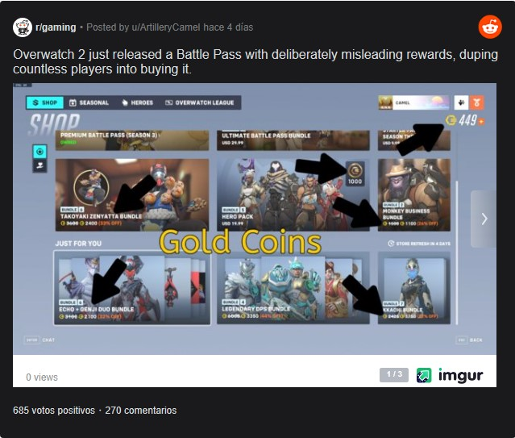

Overwatch 2 recibe críticas por un Battle Pass "deliberadamente engañoso"
La Temporada 3 del Hero Shooter ya comenzó, pero no todos están felices
Overwatch 2 está estrenando su Temporada 3 y Blizzard Entertainment quiere que eso sea motivo de emoción entre su comunidad. Tristemente, las decisiones de la compañía también han provocado que algunos jugadores estén molestos. Ahora, un sujeto levantó la voz por un Battle Pass que considera “deliberadamente engañoso”.
Pocos días después del estreno de la Temporada 3 de Overwatch 2, un usuario de reddit decidió levantar la voz ante los cambios. Resulta que una de las novedades de esta temporada era que el Pase de Batalla ofrecería divisa que la comunidad podría conseguir subiendo de nivel. De este modo quienes pagaron por el pase podrían desbloquear otros cosméticos además de los que Blizzard Entertainment seleccionó.
Para explicar el problema primero es necesario saber que Overwatch 2 tiene 3 divisas: las Monedas de Overwatch; Créditos Antiguos y Tokens de Liga. Cada moneda se distingue con un diseño diferente, pero muchos los diferencian por sus colores. Las Monedas de Overwatch son doradas; los Créditos Antiguos blancos y los Tokens de Liga son azules.
Con todo esto sería fácil identificar a simple vista cuáles son los créditos que vienen en el Pase de Batalla de Overwatch 2, ¿verdad? Bueno, pues algunos miembros de la comunidad opinan lo contrario. Lo anterior puesto que los Créditos Antiguos del Pase de Batalla tienen una tonalidad dorada en lugar de blanca. Así pues, hay usuarios que es fácil confundirse y comprar el pase esperando comprar monedas Overwatch, aunque los diseños de ambas divisas son diferentes.
Pero si de todos modos están recibiendo monedas, ¿cuál es el problema? Resulta que los Créditos Antiguos tienen mucho menor valor que las Monedas de Overwatch. Así pues, resultaría ser un trago amargo pagar esperando algo y recibir una moneda que sirve mucho menos.
¿Overwatch 2 en verdad esta siendo engañoso?
Cabe mencionar que el ícono de las Monedas de Overwatch se muestra como una moneda real, mientras que el de los Antiguos Créditos únicamente presenta el símbolo. Así pues, hay una clara diferencia entre ambos que la mayoría de jugadores deben notar. Además, el Pase de Batalla especifica el tipo de recompensa que da y Blizzard dejó claro en su comunicación que daría créditos, no monedas.
Con esto en mente, puede que este problema en realidad no afecte a tantos usuarios como la publicación indica. Dicho esto, es una realidad que el cambio a dorado de los Créditos Antiguos es un error de diseño que Blizzard haría bien en arreglar para que Overwatch 2 tenga una mejor comunicación visual. Después de todo, la monetización de Overwatch 2 ya es lo suficientemente molesta y confusa para muchos como para añadir otro dolor de cabeza.